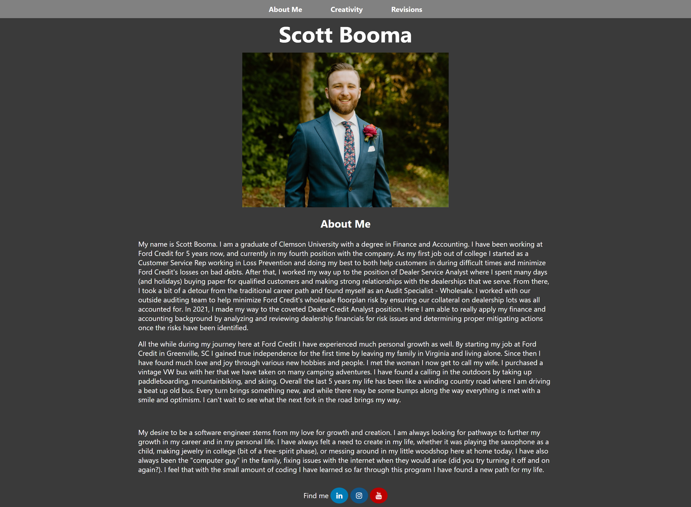
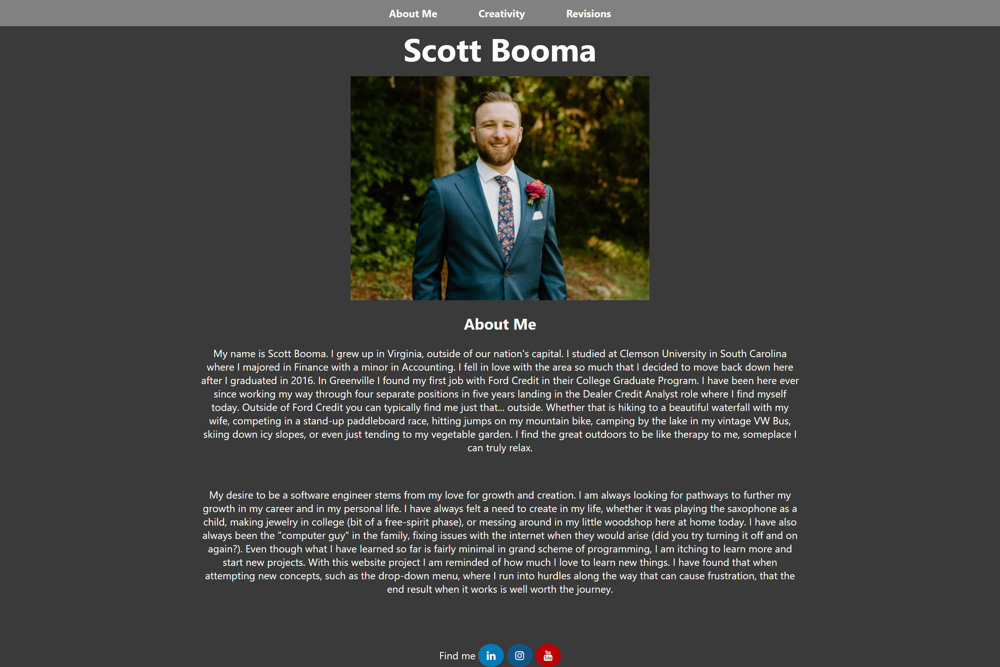
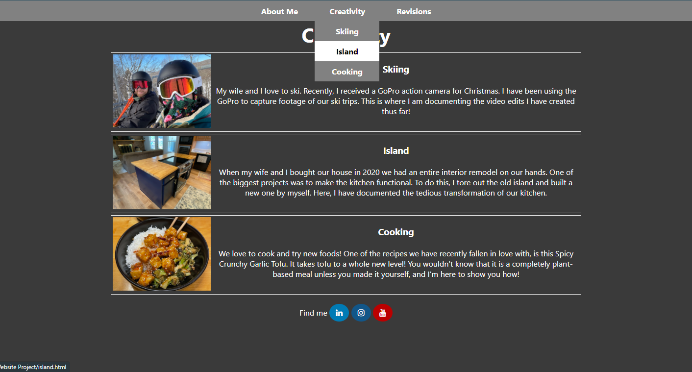
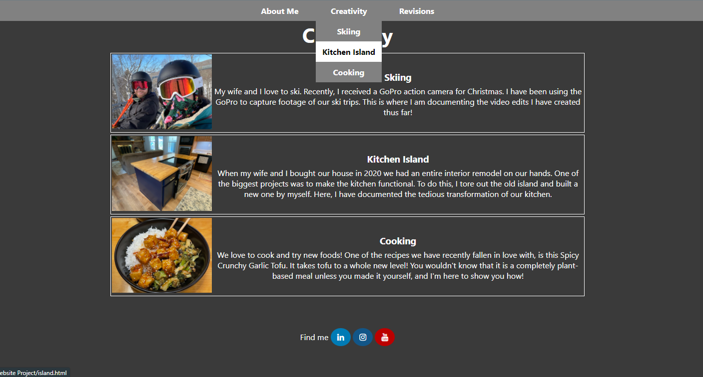

Revisions
My wife, Stephanie, acted as my supervisor here, checking my work to make sure everything was acceptable. I have a lot of trust in her as she is an aspiring UX Designer with quite the eye for design. She was the one who helped me take all of the pretty pictures of our delicious tofu dish. She had a lot to say about my website, most of it being small corrections (you forgot a comma), and some being larger design concepts well beyond my scope at the moment. A few of the more material changes she recommended are listed below.
-
The very first thing Stephanie noticed was the absolute wall of text on my About Me page. She felt while it was nice that I was telling my whole life story, I could probably cut back a little bit and make it more concise. She also felt that the left-aligned paragraphs looked a bit off with everything else on the page being center-aligned. On this page and a couple others she thought the footer should have a bit more space between it and the content of the page.
 -
It was a little difficult, but I managed to cut down my first two paragraphs into something that doesn't appear quite so daunting. It is shorter but still paints a good picture of who I am. The text was then center-aligned and I added some padding to the top of the footer to let it breathe a little bit.
 -
It had somehow passed my mind that naming pages "Island" might be a tad confusing and cause people to think I was referring to a nice island in the sun instead of the island in my kitchen. It did not slide past my wife though, she noticed immediately and mentioned that I should really change it to avoid any confusion.
 -
I changed the "Island" text throughout my website to note "Kitchen Island" as to avoid the tropical confusion. This was done on the Creativity page, the Kitchen Island page itself, and the drop-down menu present on every page.

{kind=link}
{kind=link}
{kind=link}
{kind=link}